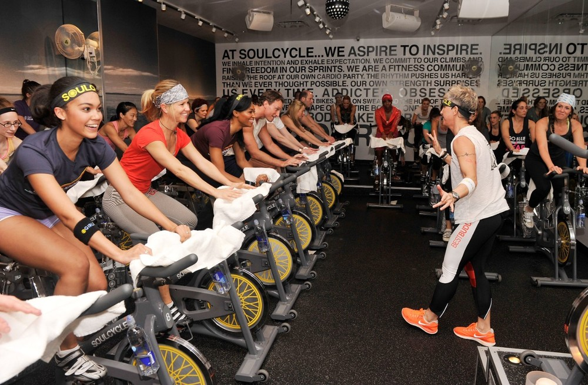
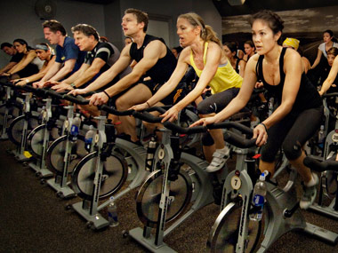
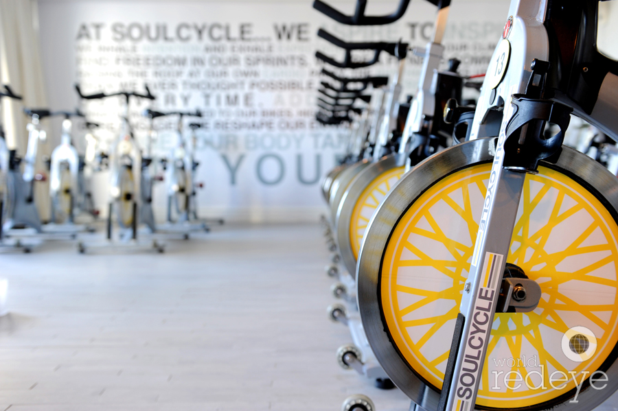

|  |  |  | |
|---|---|---|---|
| Image Source One | Image Source Two | Image Source Three | Image Source Four |
Hi, my name is Morgan Griffith and I LOVE spinning. I first discovered my passion for indoor cycling when I was in seventh grade visiting New York with my mom. She took me to the most notorious spin studio, Soul Cycle, and after that I had an insatiable need for indoor cycling.
After my first visit to Soul Cycle in New York, I continued to spin throughout the rest of my middle school and high school career. In high school, I pursued two jobs, which consisted of working at two different cycling studios. Once I began working at a cycling studio, my mom became an instuctor at the studio I worked at, which intensified my love for spinning. Now that I am at the University of Georgia, far away from my home in Dallas, TX, the only thing I look forward to is returning to my passion of indoor cycling.
After almost three semesters of having limited spin studio access in Athens, GA, my mom and I have decided to open up a spin studio next semester. We hope to open it in a location near campus so that all students will have easy access to a superior cycling studio. While opening this studio is going to take a lot of hard work, I know that with my mom and I's spin experience combined, we will be able to open a successful spin studio in the spring.